Presentación institucional
Material informativo para federaciones, autoridades, prensa y aliados.
Ingresa el código de acceso.
Código incorrecto
Material informativo para federaciones, autoridades, prensa y aliados.
Ingresa el código de acceso.


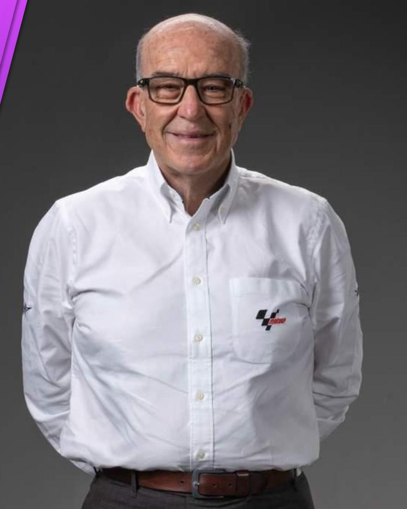
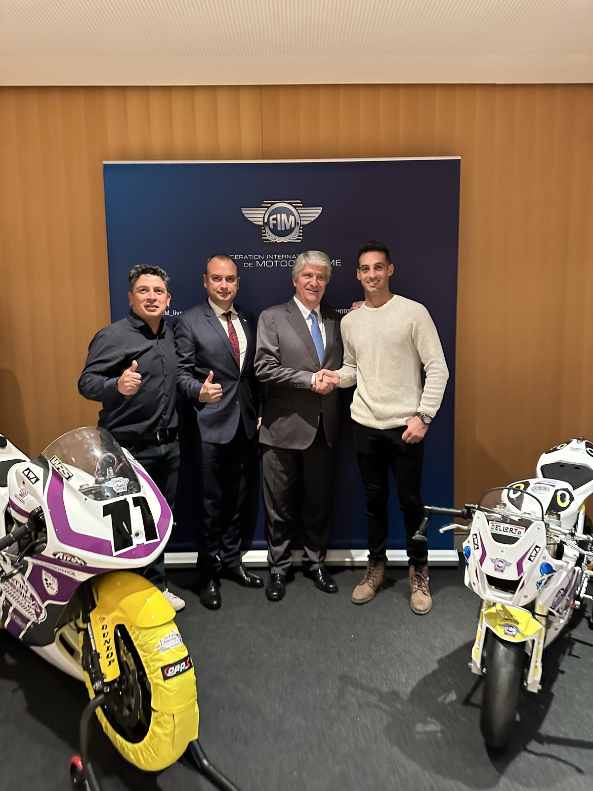
Presentación mundial del proyecto junto a Jorge Viegas, presidente de la FIM, con las dos primeras Honda NSF250 exhibidas.
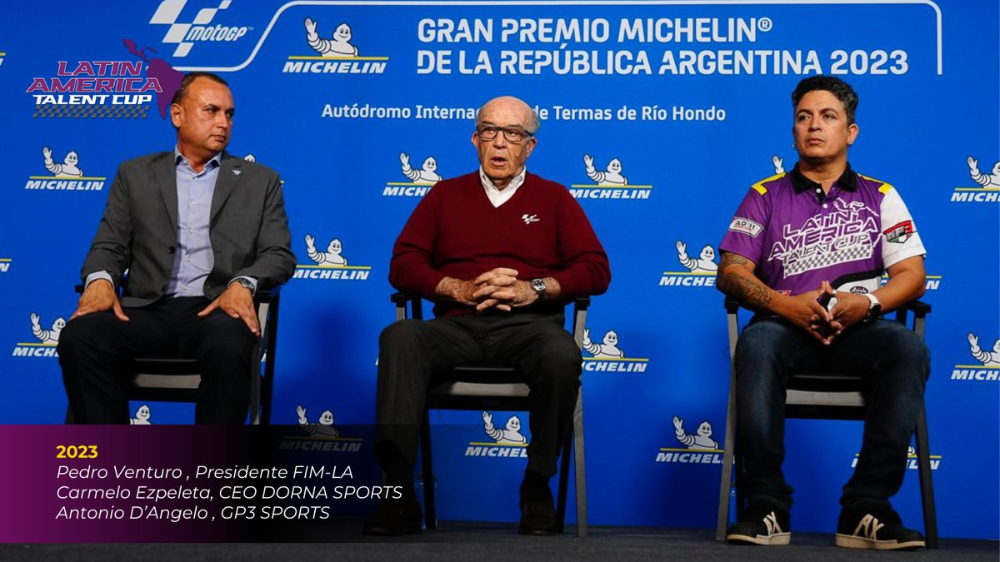
Lanzamiento oficial junto a Carmelo Ezpeleta (CEO MotoGP Group) y Pedro Venturo (presidente FIM Latin America), el 31 de marzo.
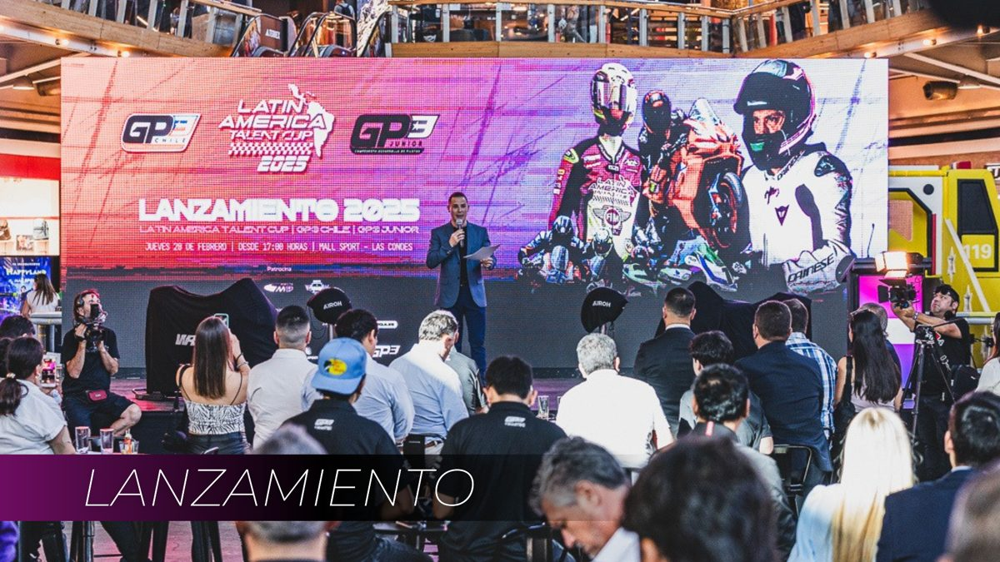
Lanzamiento en Santiago y debut en carrera. La copa corona a su primer campeón: Facundo Mora.
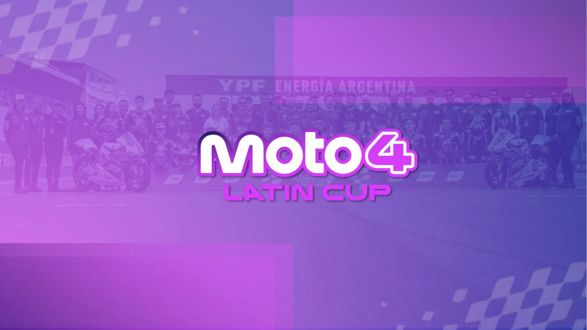
Mobil como title sponsor, Honda Brasil dentro del programa y debut junto a MotoGP™ en Goiânia. Segunda temporada, 13 carreras.

El debut: la copa corrió en el mismo fin de semana del GP de Brasil de MotoGP™.
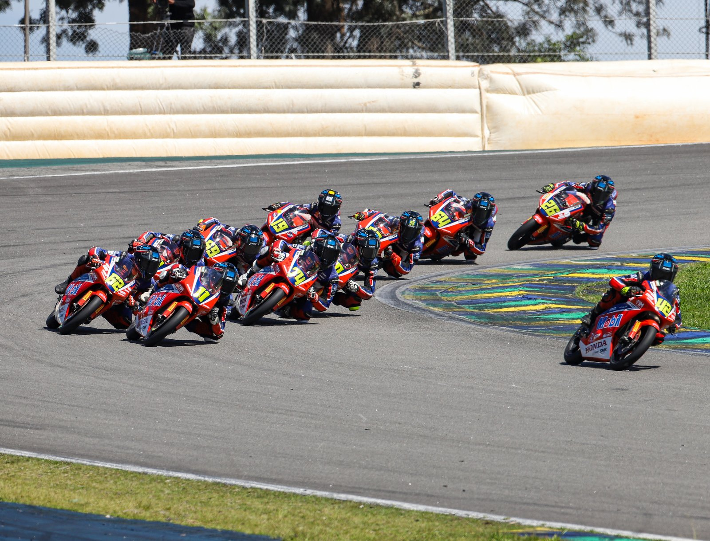
La copa en el circuito más histórico de Sudamérica, junto al Moto1000GP.
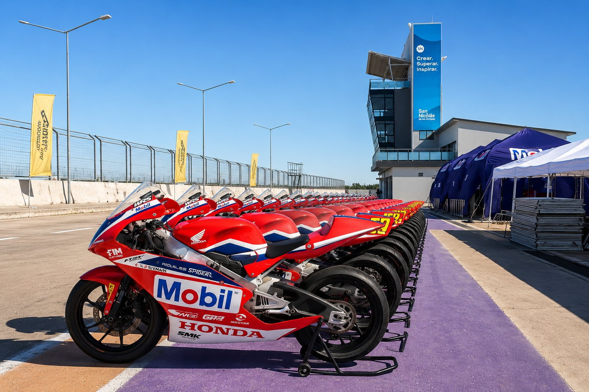
La copa cruzó a Argentina: un campeonato internacional de verdad.
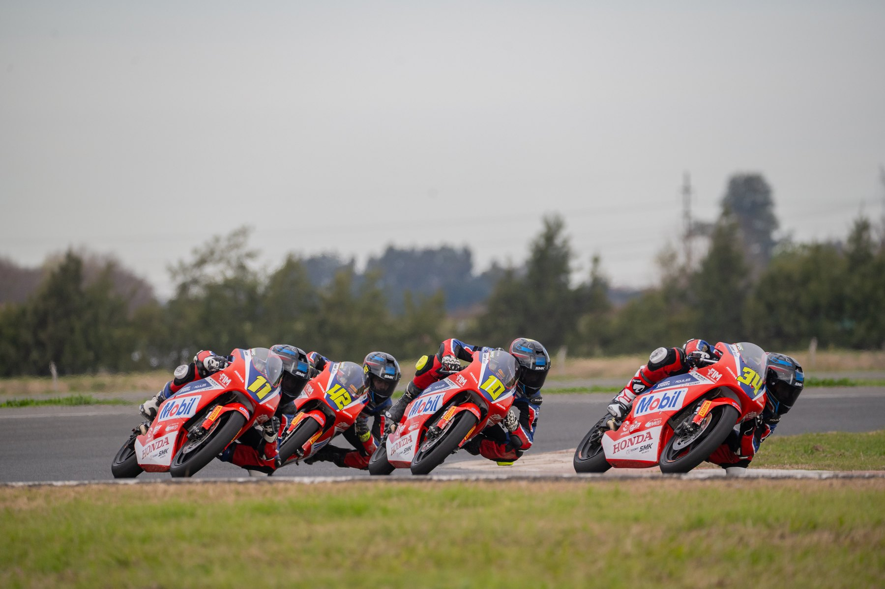
En pista · 2026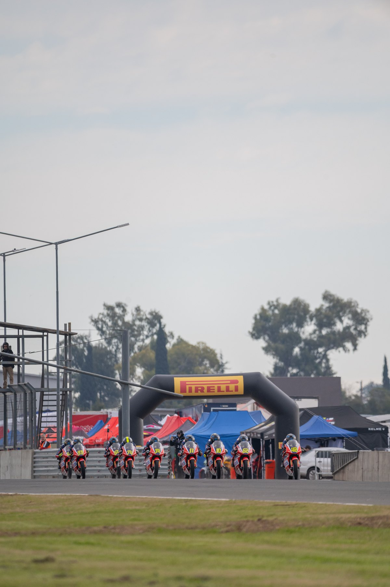
La largada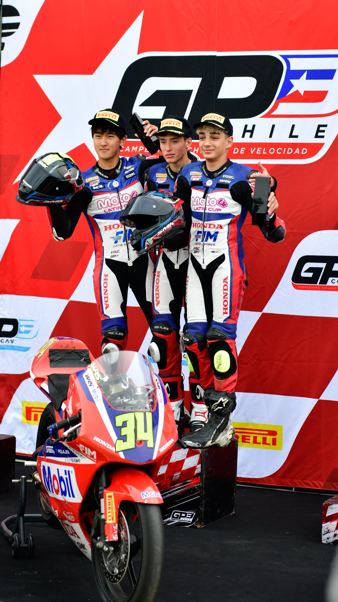
Podio · 2026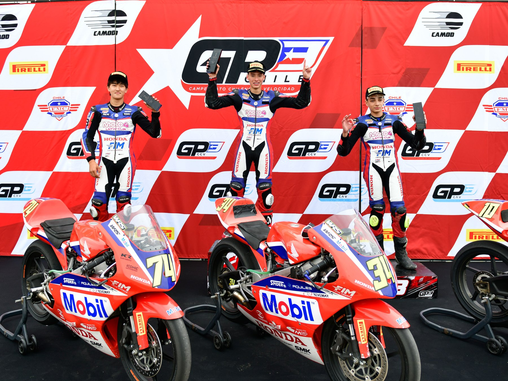
Los ganadores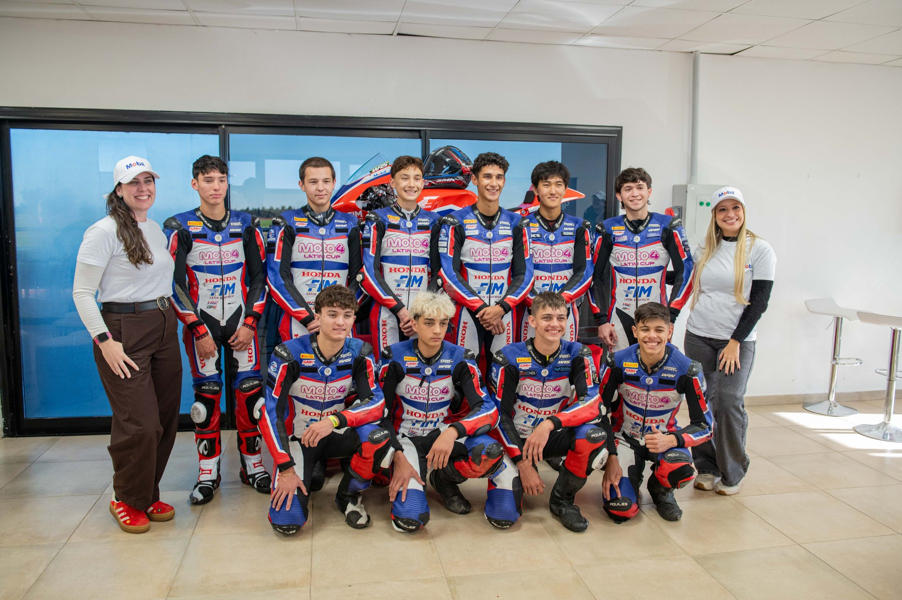
El equipo
Creada en 2014 para jóvenes pilotos asiáticos, la Asia Talent Cup es una de las principales puertas de entrada a MotoGP™ y ya produjo talentos como Ai Ogura y Somkiat Chantra.
Diogo Moreira — campeón sudamericano hoy en el Mundial — es la prueba de que el talento latino está listo. Lo que faltaba era el sistema.
Asia tuvo su camino en 2014 · Latinoamérica lo tiene desde 2025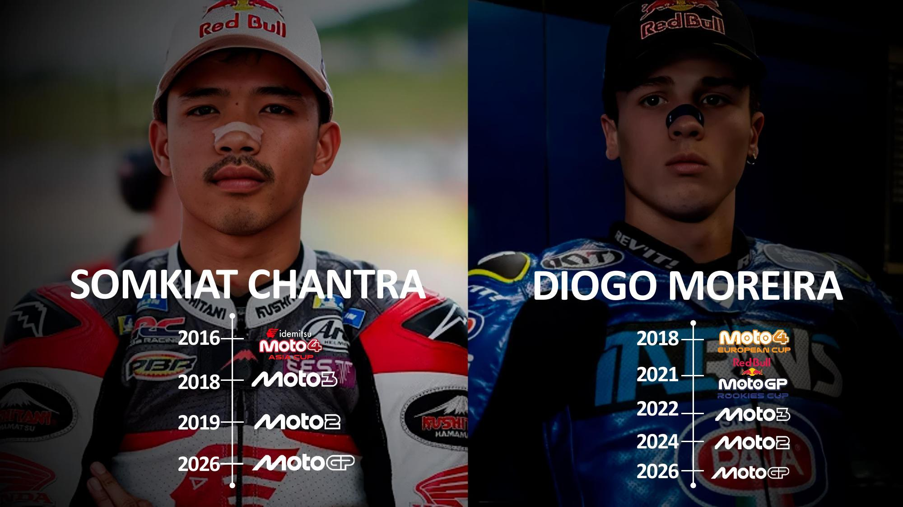

La Honda NSF250R es la misma moto de las copas de promoción de MotoGP Group en todo el mundo, con neumáticos Pirelli de especificación única para toda la grilla.
Ningún piloto compite con ventaja de presupuesto: la flota es oficial, idéntica y asignada por la organización. Aquí gana el talento, no el presupuesto.
Flota oficial de Honda NSF250R · Pirelli monomarca
 #74🇺🇸
#74🇺🇸 #62🇪🇨
#62🇪🇨 #34🇳🇮
#34🇳🇮 #10🇵🇸
#10🇵🇸 #64🇵🇷
#64🇵🇷 #99🇨🇱
#99🇨🇱 #11🇦🇷
#11🇦🇷 #46🇵🇾
#46🇵🇾 #42🇧🇷
#42🇧🇷 #26🇦🇷
#26🇦🇷 #91🇺🇸
#91🇺🇸 #19🇦🇷
#19🇦🇷 #69🇻🇪
#69🇻🇪 #16🇻🇪
#16🇻🇪 #8🇨🇱
#8🇨🇱 #15🇲🇽
#15🇲🇽